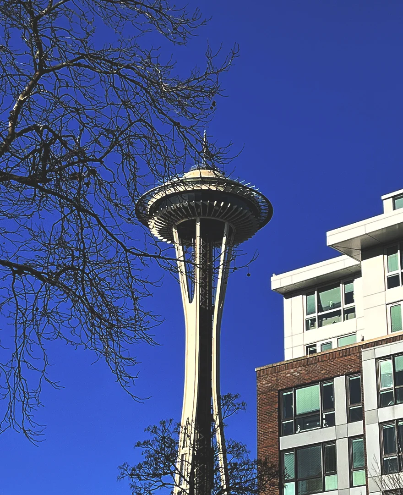
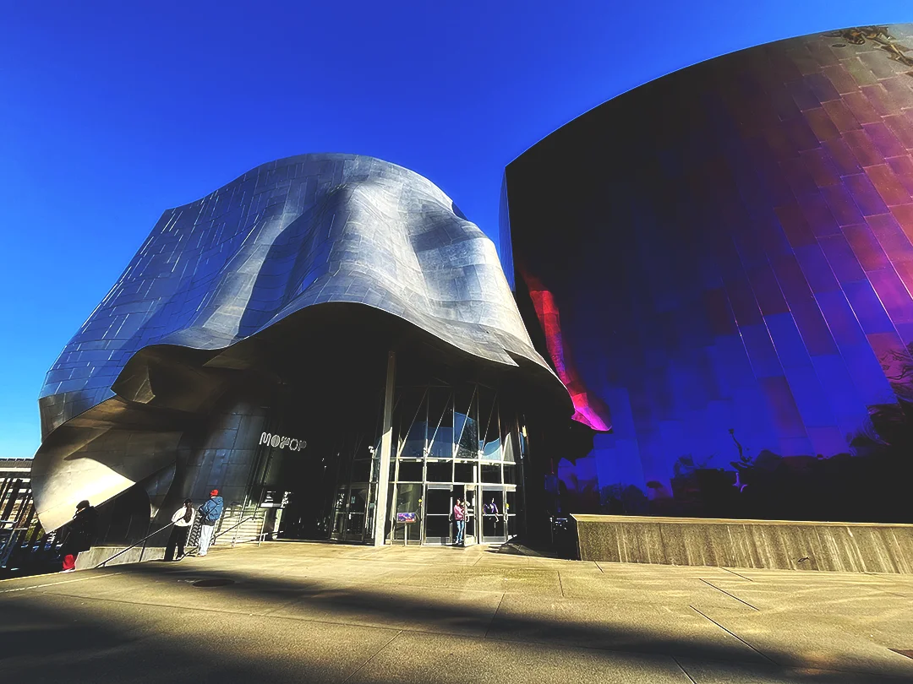
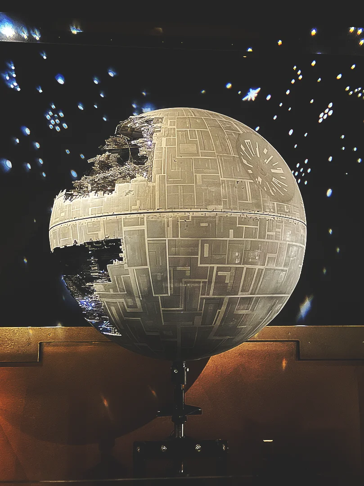
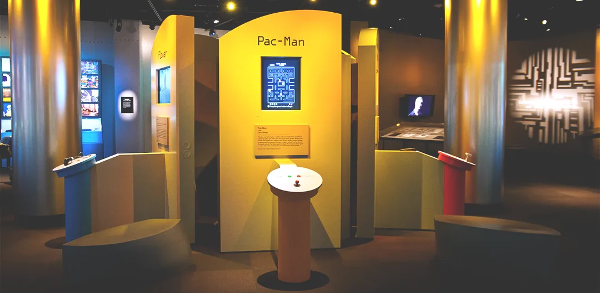
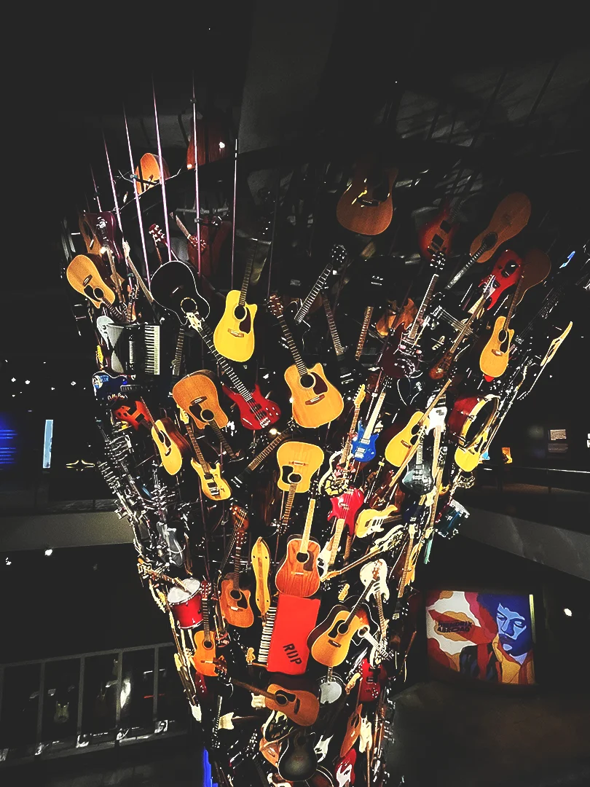
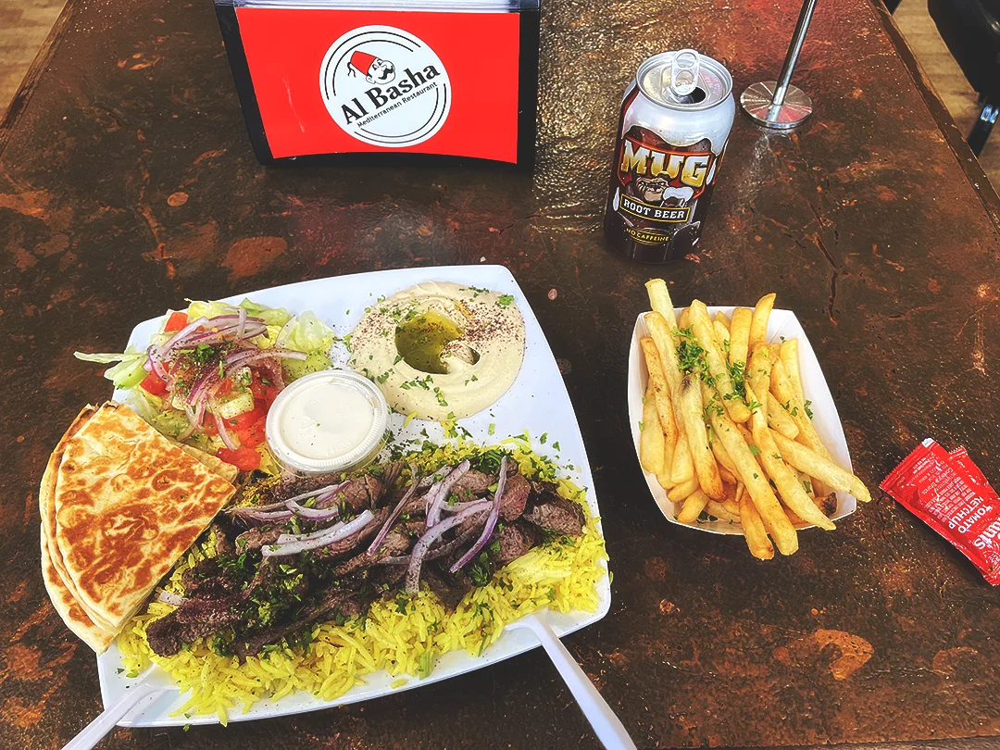
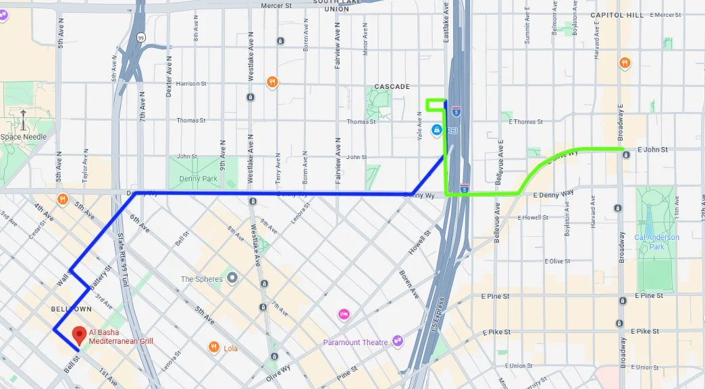
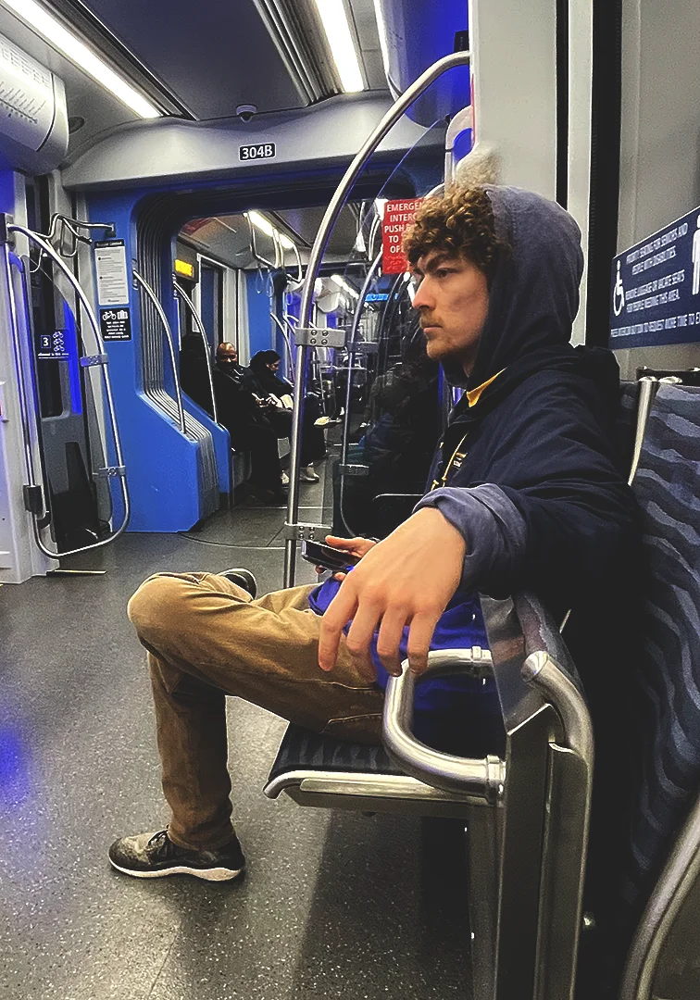

Day 6 - MPOP, Amazon, Shoreline, and Dennis
Breakfast
Marisa was leaving today. I got up at 7 to say goodbye. Despite our short time together, I really enjoyed her company and was sad to see her go. She and I had a light breakfast of peanut butter toast and orange juice. We talked about more shops Rhett and I could visit if we ever came back to the city. Marisa seemed to really enjoy Seattle, much the same as I.
I said bye to Marisa and continued my breakfast alone, listening to Geotic and recounting our travels. When Rhett got up, he was served some eggs and a chess beating for breakfast. We had talked about going to the MoPOP earlier, a fight between that and the aquarium, both guarded behind a $30 entrance fee. I was down to go to the MoPOP, so that's what we ultimately did.
The Museum of Pop Culture
Our walk was part fog and part sunshine. We realized we were starting to get familiar with the layout of the city. We also had to pass by a guy smoking crack from a pipe. The museum was also just east of the Space Needle, so we were about 50 feet away from the entrance. It was neat to see the elevator zipping up and down!

We arrived at the entrance, paid our ticket, and stepped into the cool, dark space. Kurt Cobain was there to greet us on the wall. We trotted into the celebrity section first, appropriately defining "pop culture" with movies and images. Crazy-eyed girls were drooling over actors' and celebrities' clothing—Lizzo, Beyoncé, Rihanna. There were also movie props and costumes displayed. I saw Superman, Spider-Man, Batman, and Vader costumes.

In another section there were more movie props from horror films (Dracula) and sci-fi flicks (Star Wars, Star Trek, Dr. Who, Alien, Terminator, and more). Most of the museum was dark and atmospheric.

Back in the main area, there was a room dedicated to video games. I really liked this room, filled with nostalgic sounds and people of all ages playing both unheard-of indie games and smash hits like Pac-Man.

Still in another part of the museum was another section dedicated to the guitarists of the modern age, with headphones at each station. There was also a really neat column in the center of the museum that had lots of used instruments. It almost seemed like the museum was built around it.

Shawarma & Amazon
Rhett and I were hungry after going to the museum for a few hours, and what better way to satiate ourselves than with shawarma. Rhett found a good spot not too far away, and so we headed off to Al Basha.

The food took a little while to prepare, but it was a generous portion. It was even too much for our stomachs to handle—well, stomach. I was craving root beer, and it actually went surprisingly well with the salad, pita, hummus, lamb, and rice. We were very full upon leaving!
Rhett was interested in going to locate his potential work location at the Amazon Atlas office and explore potential transportation options, so we set out on a walk northeast towards South Lake Union. We walked along the streets until we got to Denny Way. From Denny we took Eastlake Ave. We found the building, very close to an REI. We poked around a bit until a very nice lady told us that the buildings were closed. Rhett asked about transportation options. The lady heard our questions and told us there were two routes to take. Rhett was curious to explore, so we headed off to the Capitol Hill tram stop.
The Commute to Capitol Hill
We got a bit turned around but eventually found our way back to Denny, up a very steep hill over the interstate. From there we turned onto Olive Way and past Arcade Plaza, where a drawing of Pac-Man was on the ground. It was uphill all the way. Rhett and I both agreed walking Seattle pretty much forced you to be fit.

After what seemed like forever we made it to the Capitol Hill Station. Rhett already had an ORCA pass, but I had to buy one. I remembered each trip was about $3, so I put $9 on there, grabbed my new shiny card, and stepped deeper underground to wait for transport.

Shoreline
Evening Activities & Dennis
[Content to come.]